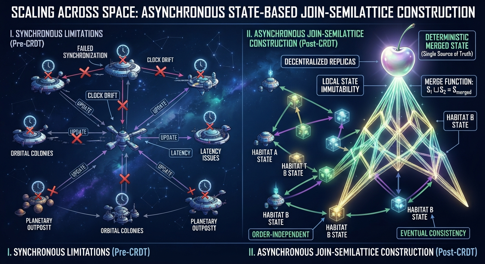
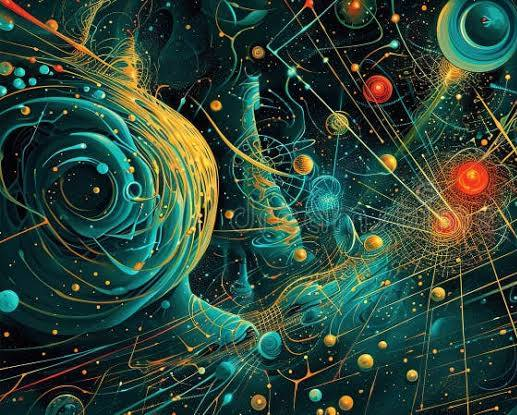
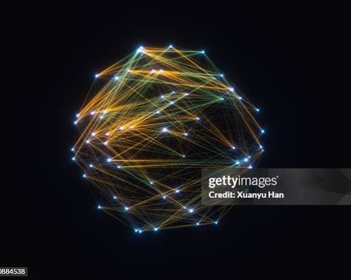

Conversation 833
As a civilization scales across space, it must drop standard synchronous frames and transition into an asynchronous, state-based join-semilattice construction ( ) where replicas merge deterministically independent of delivery order and clock drift.
Prompt 1 · You
As a civilization scales across space, it must drop standard synchronous frames and transition into an asynchronous, state-based join-semilattice construction ( ) where replicas merge deterministically independent of delivery order and clock drift.
Response 1 · Google AI Mode


Here are top web results for exploring this topic:
GitHub Pages documentation·https://jhellerstein.github.io
CRDTs #2: Turtles All the Way Down | Async Stream
Modern distributed systems often seem to rest on an stack of turtles. For every guarantee we make, we seem to rely on a lower-layer assumption. Eventually we're left wondering: what is at the bottom?
Wikipedia·https://en.wikipedia.org
Kardashev scale - Wikipedia
"The Kardashev Scale" and "Galactic civilization" redirect here. For the album by Greydon Square, see The Kardashev Scale (album). For the video game, see Galactic Civilizations. The Kardashev scale (
www.nexxant.com.br·https://www.nexxant.com.br/post/kardashev-scale-civilization-types-and-technologies
The Kardashev Scale: Types of Civilizations and Their Technologies
This simple yet profound concept has captivated scientists, futurists, and space enthusiasts for decades. It challenges us to look at the cosmos not merely as a frontier to explore, but as a stage for

Source links preserved from this response
- jhellerstein.github.io
https://jhellerstein.github.io/blog/crdt-turtles/ - en.wikipedia.org
https://en.wikipedia.org/wiki/Kardashev_scale - udspace.udel.edu
https://udspace.udel.edu/items/9611fd6f-19d2-4809-a87c-1e8fc1938629 - www.nexxant.com.br
https://www.nexxant.com.br/post/kardashev-scale-civilization-types-and-technologies - spaceexplored.com
https://spaceexplored.com/2025/12/07/what-is-a-type-ii-civilization/ - www.facebook.com
https://www.facebook.com/ceressoft/posts/the-kardashev-scale-was-created-in-1964-to-determine-the-level-of-technological-/804895778306248/
Prompt 2 · You
generate a picture of my prompt (it's imo like a cherry), but first formalize it
Response 2 · Google AI Mode
Mathematical Formalization
To escape synchronous time frames across relativistic distances, the interstellar civilization models its distributed state as a CvRDT (Conflict-free Replicated Data Type) structured as a bounded join-semilattice.
A state-based join-semilattice is mathematically formalized as a tuple , where:
- is the set of all possible partial states known by any localized planetary or orbital replica.
- is a binary operator called the join (least upper bound), satisfying three fundamental algebraic properties:
- Idempotence: (merging a state with itself changes nothing).
- Commutativity: (order of arrival does not matter).
- Associativity: (grouping of arrivals does not matter).
Because network messages across deep space can be delayed, duplicated, or reordered due to orbital mechanics and gravitational lensing, any two replicas and can safely merge their states and via . This guarantees strict Strong Eventual Consistency (SEC). Replicas advance monotonically up the partial order defined by:
The "Cherry" Topo-Geometry
Visually and topologically, your "cherry" intuition maps directly to this infrastructure:
- The Fruit (Nodes): The two hanging cherry bulbs represent localized state replicas or coordinate hubs separated by light-years.
- The Stems (Monotonic Paths): The stems represent the upward causal histories tracking the partial order ().
- The Junction (The Join ): The point where the two stems meet at the top represents the least upper bound—the exact state merge event where information from both deep-space entities reconciles deterministically.
Visual Interpretation
Here’s your generated image.

Download
Here are some web-sourced visual concepts showcasing abstract mathematical graphs and cosmic lattice network models for inspiration:


Would you like to refine the mathematical rules of this network (e.g., adding vector clocks or handling tombstones for deleted galactic nodes), or should we alter the artistic style of the visual generation?
Prompt 3 · You
no like a moebius strip where there are two globes and then a miasmatic van gogh like stream over the shell of the globe and then like that static electricity balls where the arc jumps, but it turns infinitely thin, which is a two stage preparaat 1 lipids preparaat 2 carbohydrates biochemical and biomechanical K prism where it is electric cyan and electric pink HDR (because it doesnt just look cool it has abberation)
Response 3 · Google AI Mode
Here’s your generated image.
Download
Would you like to zoom into one of the specific chemical layers, such as Preparaat 1 (lipids) or Preparaat 2 (carbohydrates), to reveal how the state-based data is encoded inside those microscopic molecular structures?